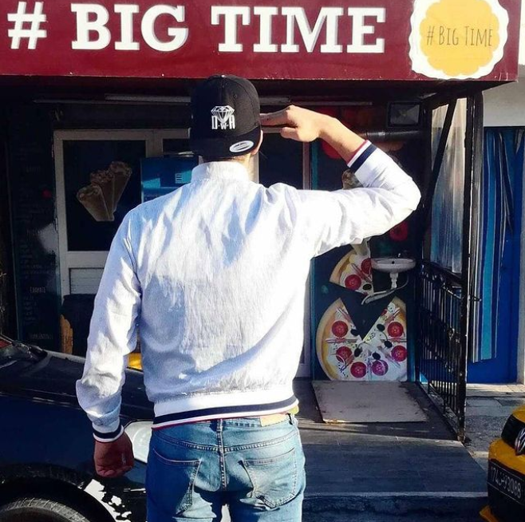

l'histoire de big time :
en 2001, rafiq a décidé d'ouvrir son premier restaurant à amilcar c'était dur mais trois ans plus tard
il commence à gagner un peu d'argent il a donc ouvert un cafeteria dans un lycée.
des années plus tard, il a ouvert de nombreux magasins (2 restaurent, ferme, buvette... et bien d'autres)
et en 2020 il rejoint jumia food
